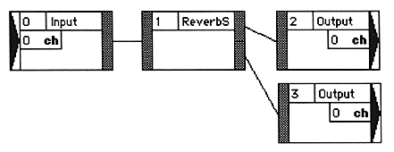

is connected, a module ID is automatically assigned to each module. As a general rule, the module IDs connected by wiring need to increase from the input side to the output side.
Module IDs are assigned in the order of connection. Please note the following:
- If the connected module does not have an ID, the maximum currently used ID + 1 is assigned.
- If both connected modules have no ID set, the output side has a small ID and the input side has a large ID.
When the - module is deleted, the ID is filled so as not to be discontinuous.
- In principle, it is recommended to connect the modules in the order from the input side to the output side. This assigns a module ID to each module in the order in which they are connected (from the input module to the output module). If you make connections that do not comply with this, or if you make partial connections, the module ID may be out of order, causing malfunctions such as oscillation or changes in sound quality. In such a case, renumber the module ID as necessary (double-clicking the module ID display area will display a dialog for renumbering).
- When using a module with multiple input ports (assumed to be module X), set the IDs of all modules on the path connected to all input ports of module X to a smaller number than module X. It is recommended. If the module ID is not set as such, malfunctions such as oscillation and sound quality changes may occur (particular attention should be paid to the “VoiceCancel (VoCan)” module). In such a case, renumber the module ID as necessary (double-clicking the module ID display area will display a dialog for renumbering).
Example of correct module ID
